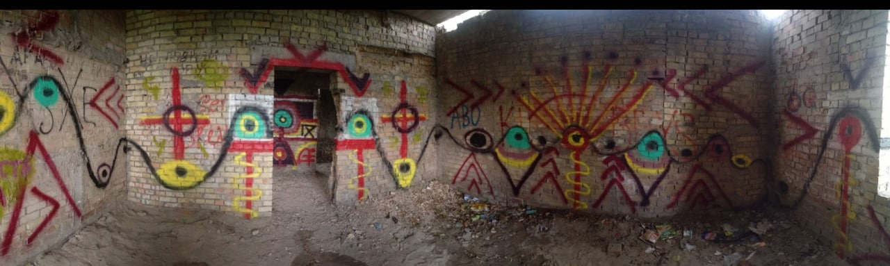
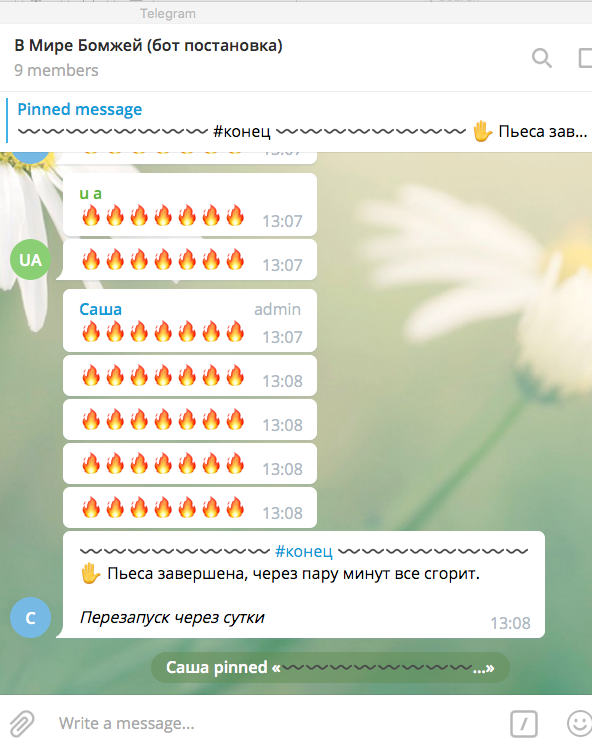
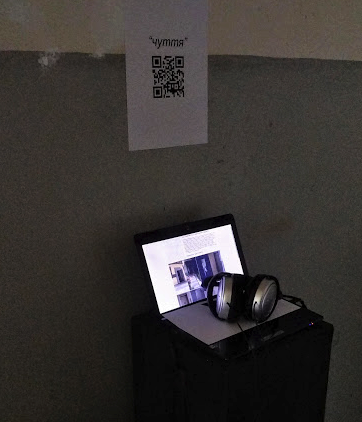
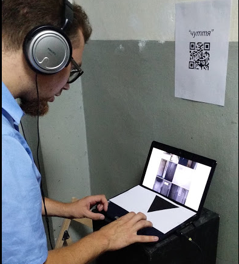

Междисциплинарные арт-проекты
Современная ритуальная комната
Лето 2019. Я создал систему символов и нарисовал по ней «ритуальные» граффити. Это недостроенное здание больницы для душевнобольных. Последний этаж.

Интерактивная онлайн-драматургия: «В мире бездомных»
2026. Интерактивная онлайн-пьеса: https://apps.danvoronov.com/unhoused/. Интерактивная документальная драма, в которой четверо персонажей встречаются ночью у костра и делятся своими историями жизни без дома.
Весна 2019. Читка Telegram-ботами пьесы «В мире бездомных». Я переосмыслил наш драматургический проект с Юлей Гончар (см. театр). Сделал 4 ботов, ставших «актёрами», которые каждый день «читали» нашу пьесу в публичном чате в реальном времени. Когда они заканчивали, весь текст «сгорал».

Подробности в статье на Medium.
Веб-арт и инсталляция “Чуття”
В этом проекте лета 2018 года я совместил и расширил то, чему научился создавая электромузыку на полевых записях.


В сети адресу http://danvoronov.com/prj/soshenko33/ под руководством менторов “Летней Архитектурной Школы Сошенко 33” я создал медиа слепок “духа” данного нам в изучение дома-худмастерских на Сошенко 33, Киев.
подробности проекта в заметке